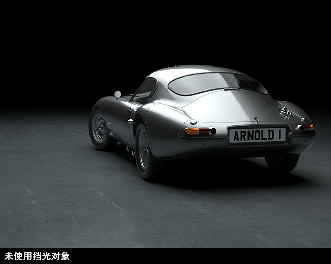
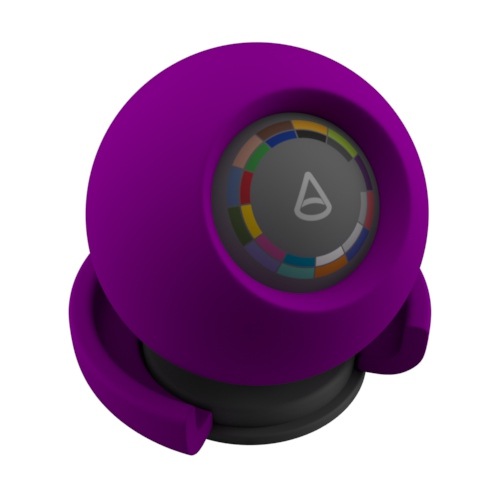

工作室汽车渲染
本制作教程介绍了一些照明、着色和渲染提示，用于复制工作室灯光风格的汽车照片。成功进行汽车渲染的关键在于采用真实的照明。为了在工作室中正确地为汽车提供照明，需要进行大量工作和微调。实现正确的照明是创建有趣的镜面反射的关键，有助于加强汽车的美感。此处提供的提示旨在简化整个过程。
有关在现实世界中为汽车照明的示例，请单击此处。
本教程分为以下章节：
照明
反光板
着色
四边形区域照明
场景简单地使用区域光（四边形）进行照明，形成大型工作室柔光箱照明。另外，还添加了一个反光板，用于显示车身侧面的反射。
颜色纹理
为了在汽车涂料和挡风玻璃中获得真实的颜色和镜面反射，建议向灯光的颜色添加 HDR 贴图。要下载此场景中使用的示例 HDR 贴图，请单击此处 (Flat_2.hdr)。
| 使用 HDR 贴图 | 未使用 HDR 贴图。请注意，如果没有添加 HDR 贴图，灯光的反射（和颜色）中会缺少一些有趣的效果。 |
软边
使用 quad_light 中的 soft_edge，可以为灯光的边缘指定平滑衰减。这会在汽车涂料和挡风玻璃中创建一个更柔和的灯光镜面反射效果。
在这里我们可以看到使用渲染摄影机将 soft_edge 增加到 0.5 时的效果。
镜面反射贡献
我们在汽车引擎盖上看到一些过爆高光。降低灯光的曝光*会有所帮助。但是，这也会降低场景的整体照明，而我们不希望这样。更简单、更有效的方法是减小 *quad_light 的镜面反射贡献。
通过向 quad_light 添加 light_blocker，可以对灯光在汽车中的反射位置和方式进行更好的艺术控制。请留意它对汽车右侧的照明和反射的影响。
|  |
自发光平面
已放置白色的反射平面，目的是增加汽车侧面的反射和照明。这是因为汽车摄影师通常不会直接将灯光照射到汽车上，而是将灯光照射到汽车涂料反射的表面上。在本例中，emission_weight 为 0.5。当然，您还可以将纹理映射到 emission_color*。但是，在本例中，即使 *emission_color 为白色，也可以发挥作用。
如果我们启用“诊断 -> 功能覆盖”(Diagnostics -> Feature Overrides)下的“忽略灯光”(Ignore Lights)，则可以清楚地看到自发光平面在汽车反射中的效果。
当启用“忽略灯光”(Ignore Lights)（在“功能覆盖”(Feature Overrides)下）时，自发光平面的效果更清晰可见
着色
本部分中的大多数内容都是附加说明，因为这些着色效果可以使用 car_paint 着色器来实现。
正面比着色器
facing_ratio 可用于为汽车涂料创建珠光颜色涂层。在下面的示例中，coat_color 已添加到 standard_surface 着色器。在本例中，facing_ratio 着色器已连接到 coat_weight*，并用于增强 *coat_color 效果。
|  | |||
| base_color | metalness | coat_color | facing_ratio -> coat_weight |
 |
此效果在面向摄影机的区域（如前照灯）更明显。
薄膜
我们也可以使用 standard_surface 着色器中的 Thin_film 来创建多色调汽车涂料材质（厚度：400，IOR：1.43）。
 |
工具着色器
有一些着色器可用于渲染汽车模型。工具和线框着色器可用于在评估模型时诊断轮廓线和点连续性问题。通过工具着色器中的“反射线”(Reflection Lines)模式，您还可以了解实际的反射情况。当构建汽车模型（其中曲面求值至关重要）时，此类着色特别有用。
| 反射线（工具着色器） | 线框着色器 |
工具着色器还具有“金属”(Metal)shade_mode。这可以作为测试并检查汽车中的反射高光的一个简单着色方法。
使用工具着色器（shade_mode 设置为“金属”(Metal)），可以更清晰地看到灯光的镜面反射效果。
关于汽车工作室渲染的教程到此结束。试着使用此处介绍的一些技术复制汽车的工作室照片。
有关如何使用 MtoA 照亮汽车的视频教程，请单击此处。
汽车模型可从学习场景页面获取。